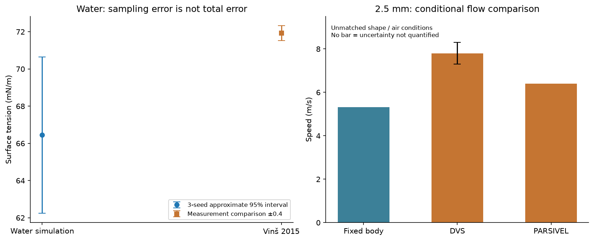
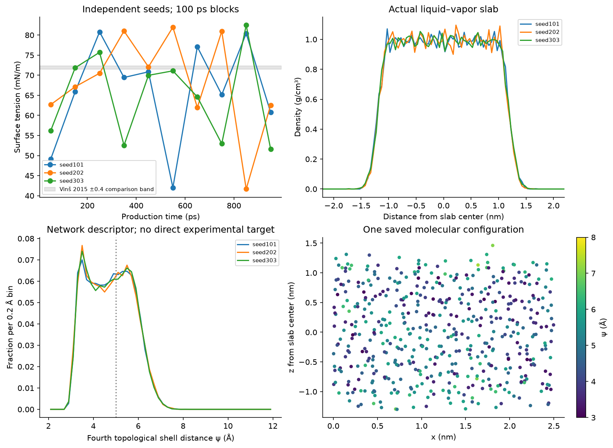
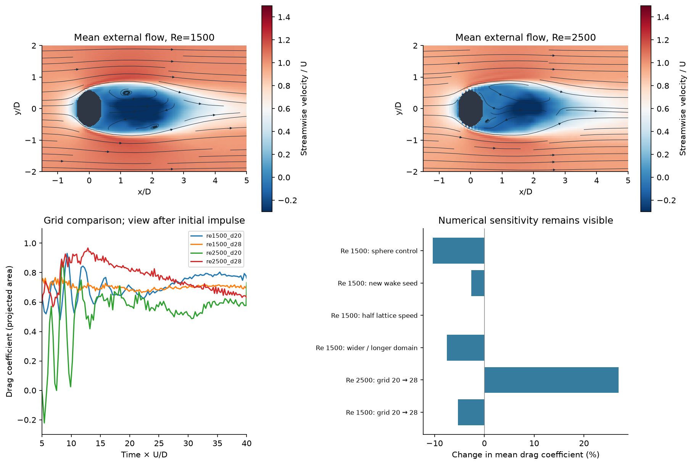

STREAMS AND ROCKS · COMPUTATIONAL SUBSTANCE STUDY · 17 OCTOBER 2026
Water interfaces and the air around large drops
Completed molecular simulations and three-dimensional flow calculations, with new published measurement comparisons. These two studies resolve different scales and have separate evidence limits. The molecular calculation does not supply viscosity or shape to the flow model.
What the runs foundThe three primary water seeds give 66.45 ± 4.20 mN/m (approximate 95% interval from three seed means), compared with 71.92–71.93 mN/m in the selected measurements. The difference of central estimates is -5.48 mN/m. This interval covers sampling only, not all model errors. The 100 ps block estimate of the standard error is 2.19 mN/m if blocks are independent; residual correlation can make that estimate too small.
The fixed oblate-body flow calculation gives a conditional terminal speed of 5.32 m/s for a volume-equivalent 2.5 mm body. The new study reports approximately 7.8 m/s by DVS and 6.4 m/s by PARSIVEL. The shape, interface mobility, airflow and numerical resolution remain important limitations; the drag result is not a validated falling-liquid-drop prediction.

Error bars have different meanings, stated in the plot: water simulation sampling interval; water measurement comparison uncertainty; DVS combined instrument uncertainty. A missing bar does not mean zero uncertainty.
1. Water: actual liquid–vapor interfaces
OpenMM integrates rigid TIP4P/2005 molecules at a thermostat setting of 298.15 K. Three independent starts each contain 501 water molecules in a 2.5 × 2.5 × 8 nm periodic cell and have 1,000 ps production after 100 ps bulk and 200 ps slab equilibration. The two additional controls use a 1 fs step and a 3 nm lateral cell, each with 300 ps production. Continuations are grouped with their original seed. There is no atmospheric gas, imposed 1 atm slab pressure, solute, bond breaking or chemical reaction in these runs.

| Run | Surface tension, mN/m | Mean T, K | Production, ps | First 300 ps | Double area strain |
|---|
| lateral_3nm | 63.3 | 298.1 | 300 | 63.3 | 62.37 |
| primary_seed101 | 66.16 | 298.5 | 1000 | 65.31 | 66.1 |
| primary_seed202 | 68.26 | 298.4 | 1000 | 66.79 | 69.22 |
| primary_seed303 | 64.92 | 298.6 | 1000 | 67.95 | 65.22 |
| timestep_1fs | 69.28 | 299.2 | 300 | 69.28 | 69.35 |
Surface tension is the free-energy cost of changing area at fixed volume: ΔF = −RT log⟨exp(−ΔU/RT)⟩. Molecular centers move while bonds remain rigid. With two interfaces, γ = (ΔF+ − ΔF−)/(4Aε), with energy/area converted to mN/m. Both ±0.1% and ±0.2% area perturbations are evaluated from the same frames. Their differences are a numerical sensitivity, not a fitted correction.
Finite-size and time-step comparisons use the first 300 ps of the primary cases as a duration-matched reference; the longer primary results are also retained. The 50, 100 and 200 ps block spreads, first/last halves and three-seed variation are available in the CSV files. A few short trajectories cannot establish a precise converged interfacial free energy. Three-dimensional PME periodic-image effects and the LJPME dispersion treatment remain part of the model specification.
| Control | Surface tension, mN/m | Primary mean over matching 300 ps | Difference, mN/m | Difference, % |
|---|
| lateral_3nm | 63.3 | 66.69 | -3.387 | -5.079 |
| timestep_1fs | 69.28 | 66.69 | 2.597 | 3.894 |
Each control is a single short trajectory; its difference cannot cleanly separate numerical bias from sampling noise. Increasing the lateral size also adds water and increases liquid-film thickness. These controls do not yet establish a converged infinite-system result.
The fourth topological neighbor at the surface
The full hydrogen-bond network is constructed before any surface grouping. ψ is the smallest oxygen distance to a molecule whose shortest hydrogen-bond path has exactly four links. Below 5 Å is labelled “HDL-like”; otherwise “LDL-like”. A missing fourth shell is unclassified. HDL and LDL refer to high-density and low-density liquid; here they are labels assigned by the distance threshold. They are not different substances or proof of separate liquid phases. Each group's fractions below are descriptive pooled molecule-frames, not independent molecular replicates.
| Seed | Planar group | HDL-like fraction | Classifiable fraction | Unclassified molecule-frames |
|---|
| primary_seed101 | bulk | 0.6627 | 1 | 0 |
| primary_seed101 | interface | 0.3797 | 0.9992 | 4 |
| primary_seed202 | bulk | 0.6638 | 1 | 0 |
| primary_seed202 | interface | 0.3653 | 0.9989 | 6 |
| primary_seed303 | bulk | 0.6744 | 1 | 0 |
| primary_seed303 | interface | 0.3812 | 0.9992 | 4 |
Bulk means |z| < 0.5 nm from the recentered slab middle. Interface means within 0.25 nm of the fitted half-density position on either side. These are planar groups, not intrinsic ITIM surface layers. All stored analysis frames are spaced 20 ps apart. Surface tension measurements do not validate these particular ψ populations; no matching direct experimental population measurement was found.
New water measurements and independence
Vinš et al. (2015), Tables 1–2, supplies every row within 0.3 K of the chosen thermostat: 25.23, 25.22 and 25.22 °C. The tables were inspected visually. Their absolute tensions inherit an IAPWS calibration reference, with reported uncertainty around 0.36–0.41 mN/m; the plotted ±0.4 band is a comparison guide. The three rows share calibration and are not three independent experiments. The simulation's mean kinetic temperatures are reported above; no correction was fitted to erase a difference.
2. Large-drop flow: external air resolved in three dimensions
The GPU solver advances a D3Q19 lattice-Boltzmann flow around a fixed, no-slip spheroid. The main volume-equivalent Reynolds numbers are 1,500 and 2,500, with axis ratio 0.7. A sphere, axis ratio 0.84, finer grid, wider/longer domain, half lattice speed, different perturbation seed and zero subgrid-viscosity cases test assumptions. The main grids have 20 or 28 cells across D. The requested duration is 40 D/U; completed-run means use the final half. At the 2.5 mm comparison conditions, the complete run spans only about 13–16 ms; longer wake averaging remains necessary.

The wake images are actual time-averaged central slices. Curves are streamlines of that mean slice, not full particle trajectories. The force plot starts at tU/D = 5 to show later dynamics; all initial startup impulses, including negative transients, remain in the saved histories.
| Run | Status | Re | Cells / D | Mean drag coefficient | First averaging half | Second averaging half |
|---|
| low_re20 | completed | 20 | 20 | 2.964 | 2.964 | 2.964 |
| micev_dvs | completed | 1300 | 20 | 0.7185 | 0.6806 | 0.7564 |
| micev_dvs_aspect084 | completed | 1300 | 20 | 0.6837 | 0.6457 | 0.7217 |
| micev_parsivel | completed | 1067 | 20 | 0.7238 | 0.7 | 0.7475 |
| re1500_d20 | completed | 1500 | 20 | 0.7362 | 0.6926 | 0.7799 |
| re1500_d28 | completed | 1500 | 28 | 0.6971 | 0.6871 | 0.7072 |
| re1500_no_sgs | numerical_guard_failed | 1500 | 20 | None | 1.3 | 0.9777 |
| re1500_seed97 | completed | 1500 | 20 | 0.7169 | 0.6768 | 0.7571 |
| re1500_slow | completed | 1500 | 20 | 0.736 | 0.7071 | 0.7649 |
| re1500_sphere | completed | 1500 | 20 | 0.6598 | 0.6515 | 0.6682 |
| re1500_wide | completed | 1500 | 20 | 0.6806 | 0.6362 | 0.725 |
| re2500_d20 | completed | 2500 | 20 | 0.5704 | 0.5638 | 0.577 |
| re2500_d28 | completed | 2500 | 28 | 0.7244 | 0.7719 | 0.6768 |
| terminal_re1000 | completed | 1000 | 20 | 0.7559 | 0.6804 | 0.8313 |
| terminal_re800 | completed | 800 | 20 | 0.753 | 0.6872 | 0.8188 |
The projected area is π(D/2)2 a−2/3, where a is the streamwise/transverse axis ratio and D is volume-equivalent diameter. Drag uses this area, not the sphere area. Air properties used for physical comparisons are explicit assumptions: density 1.204 kg/m³ and kinematic viscosity 1.5 × 10−5 m²/s; water density 998.2 kg/m³ and gravity 9.80665 m/s². The 2.5 mm comparisons have Reynolds numbers around 1,067 and 1,300. Re = 2,500 can instead represent, for example, D = 4.5 mm at 8.33 m/s under the same viscosity; that case has no matched new measurement here.
| Reference | Control | Drag change, % |
|---|
| re1500_d20 | grid 20 to 28 | -5.311 |
| re2500_d20 | grid 20 to 28 | 26.98 |
| re1500_d20 | transverse 5D to 7D; length 12D to 16D | -7.554 |
| re1500_d20 | lattice speed 0.06 to 0.03 | -0.03141 |
| re1500_d20 | wake seed 31 to 97 | -2.621 |
| re1500_d20 | aspect 0.7 to 1 | -10.38 |
| micev_dvs | aspect 0.7 to 0.84 | -4.842 |
A change with grid, domain or elapsed time is numerical uncertainty, not experimental evidence. The 20→28 cell comparison is only two grids; it does not establish an asymptotic convergence order. Mean-drag time variability is not an independent-sample confidence interval. Regularization and a fixed Cs = 0.1 viscosity closure stabilize unresolved scales; this is not a fully resolved turbulence calculation. The transverse boundaries are periodic, so the wider-domain control matters.
Failed control retained: at Re = 1,500 with Cs = 0, the density guard stopped the coarse run at tU/D = 25.8 (minimum density 0.796). Its partial force averages are diagnostic only and are excluded from physical drag comparisons. Numerical stability with Cs = 0.1 does not by itself establish correct turbulence or drag.
New falling-drop measurements
Micev et al. (2024) reports actual DVS and PARSIVEL measurements. Its approximately 7.8 and 6.4 m/s values are retained separately. The paper's 7.4 m/s “ground truth” comes from an older model and is not counted as new measured evidence. Figure 6, Figure 7 and Table 3 were checked visually. DVS has a reported combined velocity uncertainty of about 0.5 m/s; this is not a standard error of its mean. PARSIVEL used a different stairwell with wind, and its distribution has a slow tail.
| Case | Reported speed, m/s | Assumed axis ratio | Computed drag coefficient | Required if terminal in still air | Computed drag / effective weight |
|---|
| micev_dvs | 7.8 | 0.7 | 0.7185 | 0.3508 | 2.048 |
| micev_parsivel | 6.4 | 0.7 | 0.7238 | 0.521 | 1.389 |
| micev_dvs_aspect084 | 7.8 | 0.84 | 0.6837 | 0.3961 | 1.726 |
These rows use the measured speed to set Reynolds number and then test conditional force balance. They are not independent predictions of that speed. Separately, solving force balance with the computed Cd(Re) curve gives 5.32 m/s, by interpolation between computed cases, without fitting to either measurement. This result still assumes a fixed shape and still air. Missing matched shape, relative airflow and precise thermodynamic conditions prevent attributing the discrepancy to any single mechanism.
What this does not yet resolveA real liquid drop can deform, oscillate and circulate internally. A fixed no-slip wall does not reproduce that interface. These tests add resolved external-flow fields; they do not yet replace the earlier collection model, simulate smoke-particle capture, or validate collision/coalescence. Humidity-driven phoresis, particle trajectories and retention are not added to this particular flow solver.
Checks, provenance and reproduction
Analytical shear-wave decay, uniform flow, lattice symmetries, molecular pair energy, and rigid area changes test the implementation. The first shear-wave mass test exposed a float-accumulation error; the original failure and the conservative correction are preserved. Additional analytical tests check two-interface normalization and force balance. Saved-data checks audit every completed run, molecular geometry, finite fields, source hashes and descriptor totals. Passing these checks verifies the stated computation; it does not certify physical validity.
The short unthermostatted energy control is in nve_check.json. Production water runs exchange energy with a thermostat; the flow has open inlet/outlet boundaries. Neither production energy nor total open-domain mass is expected to be constant. Closed periodic mass conservation is tested separately. An independent inlet/outlet budget control also compares mass change against the mass supplied by the boundary rule; full boundary-population fluxes were not saved for the large production runs.
Holdout status: these are new-to-project comparisons, not formally blinded model-selection holdouts. Measurement values were visible during implementation. No physical parameters were adjusted to match them. Any later model change informed by these outcomes must treat these data as development evidence and seek another independent test.
Primary references
- vins2015 · DOI 10.1021/acs.jpcb.5b00545 · Included: three near-25 C rows, all rows within 0.3 K of the 298.15 K thermostat
- micev2024 · DOI 10.5194/amt-17-335-2024 · Included: reported actual DVS and PARSIVEL velocities for nominal 2.5 mm drops, not correlation-based ground truth
- saylor2005 · DOI 10.1063/1.1874192 · Qualitative wake context only; excluded from numerical frequency validation
- topology2025 · DOI 10.1063/5.0272802 · Method definition, not experimental holdout
- tip4p2005 · DOI 10.1063/1.2121687 · Fixed water model and parameter benchmark
- test_area2007 · DOI 10.1063/1.2715577 · Free-energy test-area method
- regularized_lbm2006 · DOI 10.1016/j.matcom.2006.05.017 · Numerical method; not a drop experiment